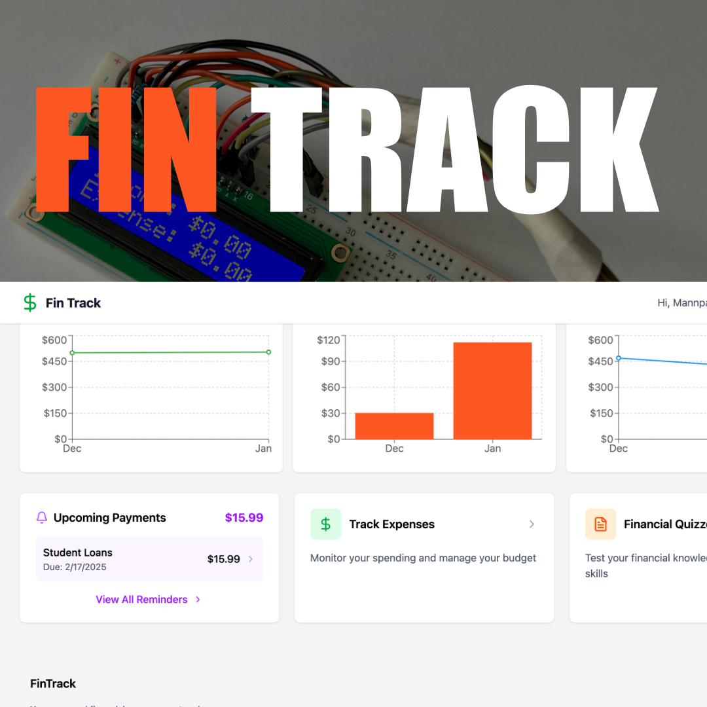

Winner: Best Hardware Implementation
Fin-Track was my solo project for CalgaryHacks 2025, built with the goal of rethinking how people connect with their finances in an increasingly digital world. While most finance apps live entirely in the cloud, I wanted to create something tangible: an offline-first personal finance system with a physical display that constantly reminds you of your spending, savings, and subscriptions.
The project combined multiple features: an expense tracker, a subscription manager, and even small quiz modules designed to improve financial literacy. What made it unique was the hardware implementation. Using an ESP32 microcontroller with a liquid crystal display, I built a device that showed real-time balances for checking, savings, and spending so users always had a visible reminder of their financial situation. Much like a to-do list that stays in front of you until tasks are done, this display was meant to keep financial awareness constant, reducing the tendency to overspend.
On the software side, I used Next.js and React for the frontend, with Supabase handling the database and authentication. The backend connected to banking data through the Plaid API, and Python/C code powered the hardware integration. Together, this created a seamless loop: financial data flowing from the cloud to the device, and back to the user in a way that felt real and immediate.
The web interface was built with React and Next.js, providing a responsive dashboard for users to view transactions, manage subscriptions, and track spending patterns. The UI design prioritized clarity and accessibility, ensuring that financial data was presented in an easy-to-understand format.
Supabase served as both the database and authentication provider, offering real-time data synchronization and secure user management. The database schema was designed to efficiently store transaction data, subscription information, and user preferences while maintaining quick query performance.
The Plaid API provided secure access to banking data, allowing users to link their accounts and automatically import transaction history. This integration followed industry-standard security practices, ensuring that sensitive financial information remained protected.
The ESP32 microcontroller communicated with the backend via WiFi, fetching updated balance information at regular intervals. The liquid crystal display showed three key metrics: checking account balance, savings balance, and current month spending. Python scripts handled the API communication, while C code managed the low-level display operations and microcontroller functions.
In a solo hackathon, there's no time for perfection. I focused on the essentials: making sure the backend was stable, Plaid was integrated correctly, and the display worked reliably before adding features like quizzes or UI polish. This approach gave me a solid foundation and made it easier to iterate quickly without hitting major roadblocks close to the deadline.
Combining web technologies with embedded systems introduced unexpected challenges. Network reliability, power management, and display refresh rates all had to be carefully balanced. I learned to design fallback mechanisms for when WiFi connections dropped and to optimize API calls to minimize power consumption on the ESP32.
The physical display changed how I thought about user interaction. Unlike a mobile app that requires active engagement, the hardware component provided passive awareness—users could glance at their finances without opening an app. This insight reinforced the value of ambient interfaces for information that benefits from constant visibility.
Keeping the physical display updated with the latest financial data required careful API design. I implemented a polling system with exponential backoff to balance freshness of data with network efficiency and power consumption constraints.
Storing and transmitting financial data raised important security questions. I ensured that the ESP32 never stored sensitive credentials locally, implementing token-based authentication that expired regularly and could be revoked remotely if the device was compromised.
Working with a character-based LCD meant finding creative ways to present numerical information clearly. I experimented with different formatting approaches to maximize readability while fitting within the display's constraints.
Fin-Track received the "Best Hardware Implementation" award at CalgaryHacks 2025. The judges particularly noted the seamless integration between software and hardware components, and the practical application of embedded systems to solve a real-world problem.
"The physical display adds a dimension to personal finance management that purely digital solutions miss. It transforms abstract numbers into a tangible presence that naturally encourages financial awareness."
— CalgaryHacks 2025 Judging Panel
The biggest insight from Fin-Track is that sometimes technology should slow us down instead of speeding us up. By giving financial data a physical presence, I turned money from an abstract digital number into something people can't ignore. Winning "Best Hardware Implementation" was a great validation, but more importantly, I left the hackathon with a stronger understanding of embedded systems, API integration, and how small design choices can have a big impact on user behavior.
This project reinforced several key principles:
While Fin-Track achieved its hackathon goals, several extensions would enhance its utility: